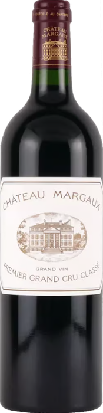
クラシック伝統・格式
- 城・シャトーの絵
- 紋章（エンブレム）
- 手書き風の筆記体
- クリーム色や白の落ち着いた背景
印象：伝統、歴史、格式、安心感
例：ボルドー、ブルゴーニュの多くの生産者。ヨーロッパの老舗ワイナリーに多いスタイル
ラベルは「沈黙のセールスマン」
近年のワインマーケティング研究のポイントを、6つのトピックにまとめました。
消費者は購入前に中身を味わえないため、ラベルからブランドの個性や品質を推測します。ラベルは「沈黙のセールスマン（silent salesperson）」であり、ブランドそのものを表現します。特にイラストは、次のようなメッセージを視覚的に伝えます。
| ① ブランド・ポジショニング | デザイン様式で、ブランドの認識が変わる。 伝統的（シャトー・紋章・ブドウ畑・歴史的建築）→ 格式・正統性・高品質・歴史。 現代的・抽象的（ミニマル・コンセプチュアルアート）→ モダン・プレミアム感・都市的ライフスタイル。 イラストは「どんなブランドか」を瞬時に伝えるブランドコード。 |
|---|---|
| ② 品質評価 | ワインは購入前に品質を判断しきれない「経験財」。色・イラスト・文字・構図などの外的手掛かりから品質を推測する。2026年の研究では、イラストとラベルカラーが知覚品質に最も強く影響し、フォントや文字色より重要と報告。「高品質そうなイラスト」は、味を知らなくてもブランド価値を高める。 |
| ③ ブランド記憶 | アイトラッキング研究：動物・鳥・昆虫のイラストのラベルは、早く視線を集め、長く見られ、記憶されやすい。視線が長く留まるほど、選ばれる可能性も高い。 視認性→記憶→ブランド想起→購買
独自のイラストは重要なブランド資産。 |
| ④ ブランドストーリー | ストーリーテリングは成功の鍵。イラストは文章より素早く、産地・神話・家族の歴史・自然環境・文化的背景を伝える。 動物 → 自然との共生 ／ 手描き風の人物 → クラフト感 ／ 地図や風景 → 地域性 |
| ⑤ 目立つ ≠ 高級 | ユーモラス・漫画的・ポップなイラストは注目を集めやすい一方、高級感・信頼性・格式を下げる場合もある。 |
伝統的・洗練されたイラスト
遊び心のあるイラスト
どんな「印象」を与えるか
ワインラベルのデザインは、大きく8つのスタイルに分けられます。

印象：伝統、歴史、格式、安心感
例：ボルドー、ブルゴーニュの多くの生産者。ヨーロッパの老舗ワイナリーに多いスタイル
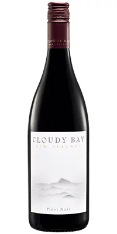
印象：スタイリッシュ、都会的、現代的
例：ニューワールド（NZ、オーストラリア、カリフォルニア）。近年増えているモダンデザイン
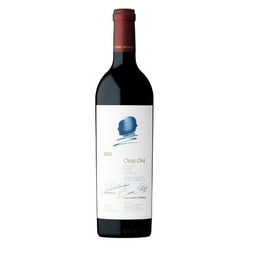
印象：個性的、芸術的、感性重視
例：ガレージワイン、自然派ワインに多い。造り手の個性を強く出すタイプ
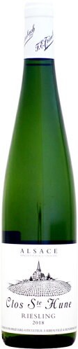
印象：ナチュラル、オーガニック、素朴
例：ビオワイン、サステナブル系。畑や自然をテーマにしたラベル
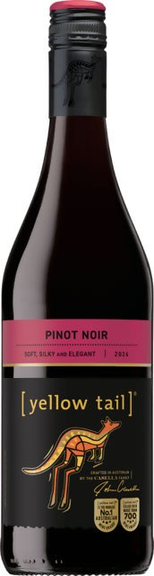
印象：カジュアル、親しみやすい、ポップ
例：スーパーやカジュアルワインで人気。親しみやすく記憶に残るデザイン
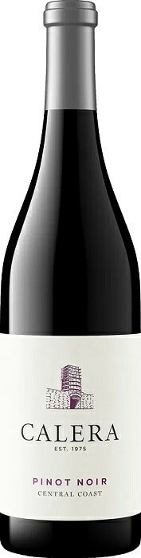
印象：力強い、モダン、印象的
例：アメリカやチリのモダンワイナリー。文字の配置やフォントで魅せるデザイン
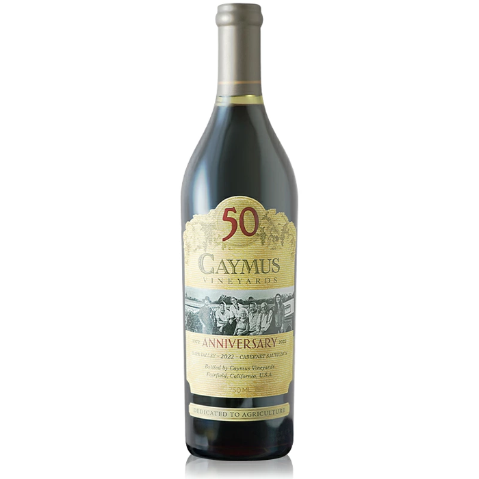
印象：情緒的、温かい、ブランドの世界観が強い
例：ラベルに物語を込めるタイプ
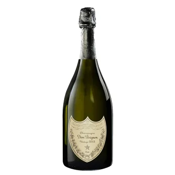
印象：高級、重厚、特別感
例：高級シャンパーニュ、プレミアム赤ワイン。高価格帯のワインに多い
※画像は各スタイルのイメージ例です。
ラベルでポジショニングマップを作ろう
ワイナリーで撮影したラベルの写真を、「伝統的⇔革新的」「落ち着いた色⇔色鮮やか」の2軸で整理します。
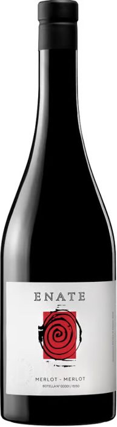
エナーテ メルロ・メルロスペイン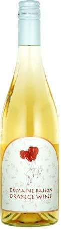
ドメーヌ レゾン オレンジワイン北海道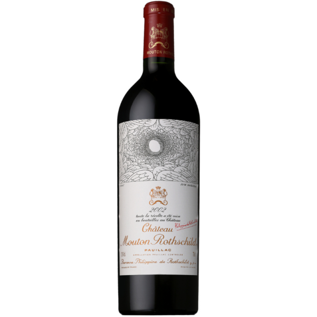
シャトー・ムートン・ロートシルトフランス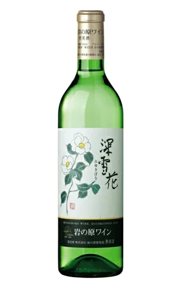
岩の原ワイン 深雪花新潟県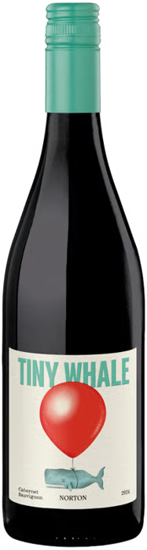
タイニーホエールアルゼンチン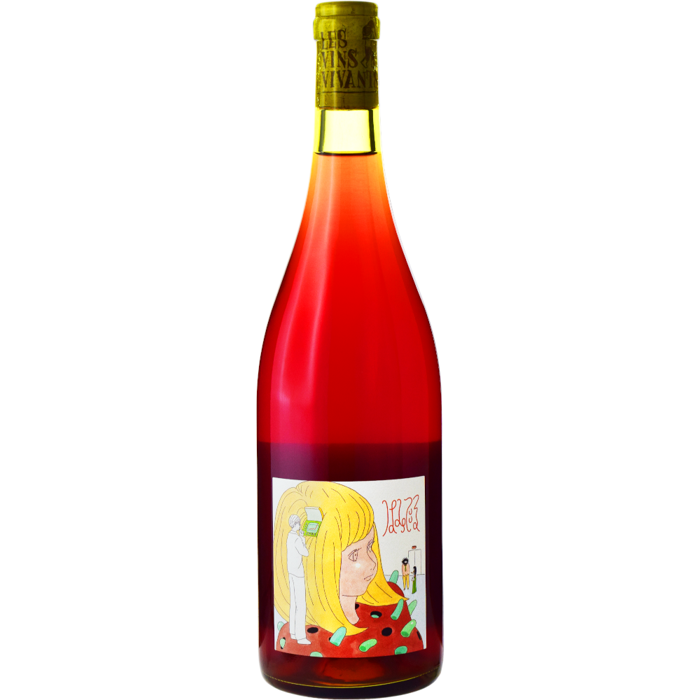
レ・ヴァン・ヴィヴァン長野県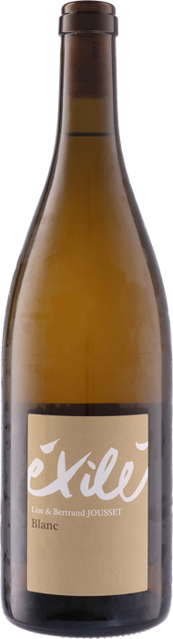
エグジレ・ブランフランス| エリア | 軸の位置 | 配置された例 |
|---|---|---|
| 上司への貢ぎ物 | 伝統的 × 色鮮やか | エナーテ、ドメーヌ レゾン |
| 親へのお土産 | 伝統的 × 落ち着いた色 | シャトー・ムートン・ロートシルト、岩の原ワイン 深雪花 |
| 友人とパーティ | 革新的 × 色鮮やか | タイニーホエール、レ・ヴァン・ヴィヴァン |
| 夫婦でしっぽり | 革新的 × 落ち着いた色 | エグジレ・ブラン |
※ 配置はスライド内の例を基にしています。ツアーでは、チームで選んだ3つのラベルを同じように配置してみましょう。
ブドウ品種のマップ
赤・白ワインの代表的な品種を、「ボディ（軽い⇔重い）」と「酸味（低い⇔高い）」で整理しました。
※ 位置は目安です。シラーズは黒系果実＋スパイスの力強い味わい。縦軸＝酸味（上ほど高い）、横軸＝ボディ（右ほど重い）。
← ツアーのページへ戻る